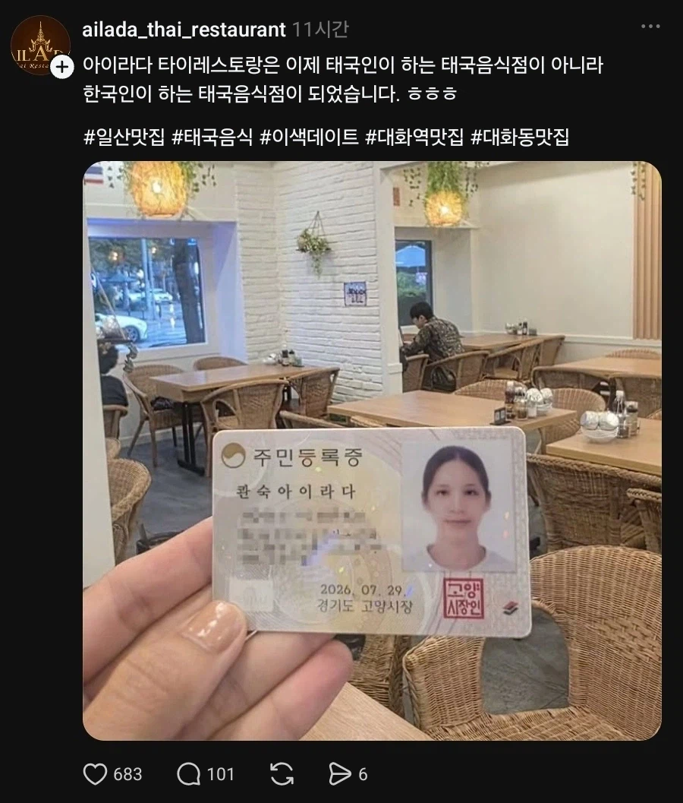

https://bbs.ruliweb.com/best/board/300143/read/76525253

한국인 주방장이라 그런가, 씁...
그 맛이 안나네... 쩝....
https://bbs.ruliweb.com/best/board/300143/read/76525253

한국인 주방장이라 그런가, 씁...
그 맛이 안나네... 쩝....
주방일하면서 취득한거 대단하다
성은 콴씨인가?
고양 콴씨
우리 와이프 베트남->한국으로 귀화했는데 시조 됨.
본국 성이 Tran (陳 : 진) 인데 이거 그대로 살려서 한국 이름 만들고,
귀화&개명신청 한 지역이 서울 금천구라 금천 진씨 시조가 됨.
좆간지네
애들 와이프성 따는거 아니면 시조이자 마지막 세대 아님?
시조 마크 한번 단 것에 의미를 두기로 ㅋㅋ
처음이자 마지막, 시작과 끝. 이거 맛있그든
1인 여성 시조면 후손은 어떻게 되는거야?
처음이자 마지막
2세 많이낳아서 김해김씨 추월해서 한국점령하면 미션클리어임
일단 법적으로 모계 성을 따르게 할 수도 있긴 한데...
금천 진 ㅋㅋㅋㅋㅋㅋㅋ
아들 둘낳으면 한명은 엄마성 줘도 되나?
ㄴㄴ
부계성을 따르든 모계성을 따르든 자유인데
형제자매간에 성씨가 달라서는 안됨
헐? 그래?
ㅇㅇ
첫째는 아빠성
둘째는 엄마성 이런건 안됨
ㅇㅎ 글쿠만 아쉽네
이혼하고 같은 사람이랑 재혼하면 가능할걸?
혼인신고서 제출 할 때 자녀 성을 누구 따를거냐 체크하는 부분이 있어
아하 ㄱㅅㄱㅅ
아들 낳으면 이름을 시황이라고 짓자 ㅋㅋㅋ
왜 쩐씨 안 하고 진씨 함?
시조 ㄷㄷ 진격의거인 ㄷㄷ
우와 ㅋㅋㅋㅋ
금천 진씨 ... 이름 좆간지나네요
금천 진 ㅋㅋㅋ 간지네 ㅋㅋㅋ
와 간지난다
처남 데려와서 금천 진씨 이어가면 안됨?
그게 되려면 완전 귀화해야하는 거 아님?
하지만 남편 성 따르니. 그대로 멸족
금천의 왕
시발 개 멋있다
금천구에서 한다고 금천 진씨 되는거 아님
본관은 창씨창본 하면서 자기가 스스로 원하는 지역으로 할수있음
몇개 선택지를 주더라고.인근 구.
금천, 구로, 영등포, 동작구 였던거 같음.
그 중에 금천 고름.
원래 선택지 있는게 아니라 아무데나 다 할 수 있는게 맞음.
내가 해봐서 앎.
이혼하면 되네
콴씨임?
어디 콴씹니까?
미쉘콴 생각나네
어쩐지 맛이 바뀌었더라
이러면 폰씨도 가능하겠네 폰은정씨 일루와봐요
한국인(태국산) 이니까 원재료 표기할때 사장 : 태국산이라고 하는건 틀린말은 아니지않을까
ㅋㅋㅋㅋ 잘살았으면 좋겠네
관숙씨?